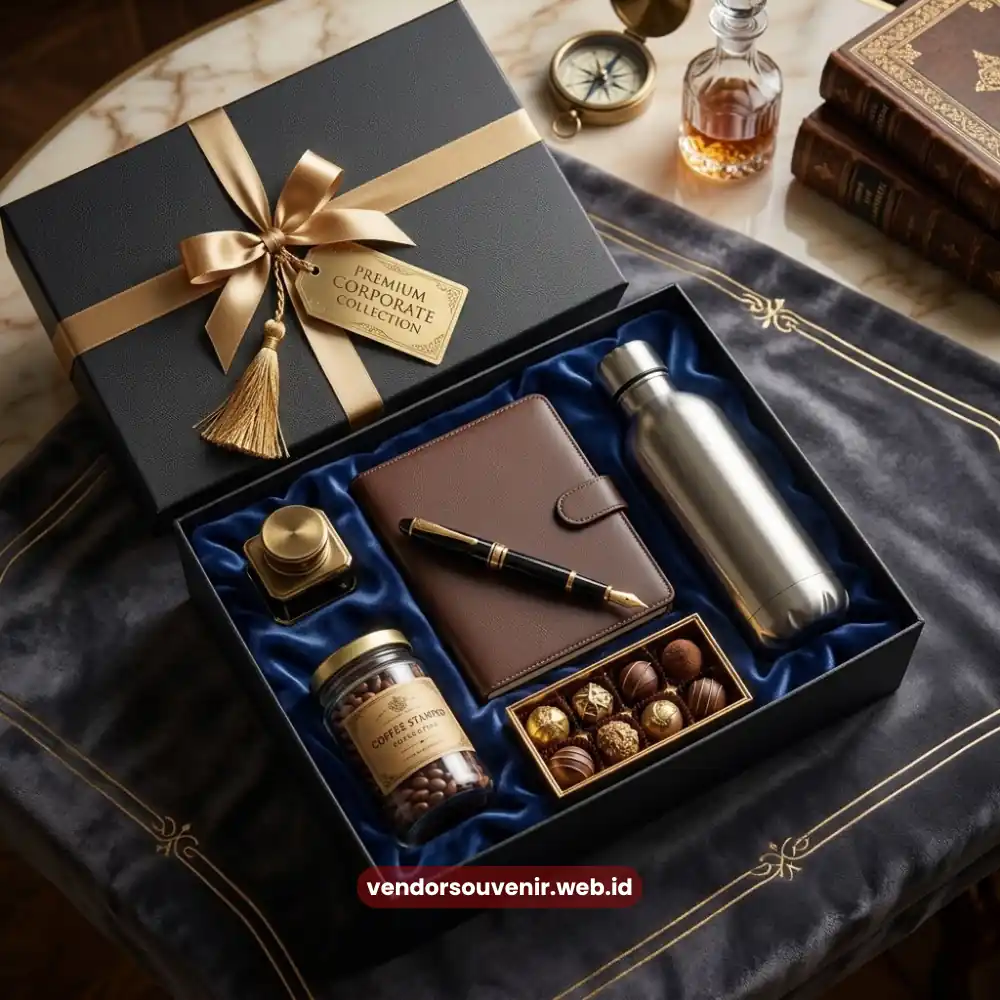

Daftar Isi
Vendor welcome kit adalah penyedia jasa pembuatan paket merchandise onboarding yang membantu perusahaan menyambut karyawan baru secara profesional dan berkesan.
Vendor Souvenir hadir sebagai mitra produksi welcome kit dengan pengalaman menangani kebutuhan korporat dari berbagai skala industri.
- Vendor welcome kit menyediakan jasa produksi merchandise onboarding mulai dari desain, pemilihan barang, hingga pengiriman ke kantor.
- Kualitas vendor ditentukan oleh pengalaman, fleksibilitas kustomisasi, dan konsistensi kontrol mutu produk.
- Menggunakan jasa vendor profesional membantu perusahaan menghemat waktu tim HR sekaligus menjaga kesan pertama karyawan baru tetap positif.
- Vendor Souvenir menawarkan konsultasi gratis dan estimasi harga transparan sebelum proses produksi dimulai.
Apa Itu Vendor Welcome Kit dan Mengapa Penting bagi Perusahaan?
Vendor welcome kit adalah pihak ketiga yang berfokus pada perancangan, produksi, dan pengadaan paket merchandise untuk menyambut karyawan baru sejak hari pertama bekerja.
Peran ini penting karena kesan pertama karyawan terhadap perusahaan sering kali terbentuk dari detail kecil, termasuk kualitas barang yang mereka terima saat onboarding.
Berbeda dengan toko souvenir umum yang menjual produk siap pakai, vendor welcome kit biasanya bekerja dengan pendekatan proyek.
Mereka memahami kebutuhan branding perusahaan, membantu menentukan kombinasi barang yang relevan dengan budaya kerja, serta memastikan seluruh item konsisten dari sisi desain dan kualitas bahan.
Bagi perusahaan yang secara rutin merekrut karyawan baru, memiliki mitra vendor welcome kit tetap juga membantu menjaga standar kualitas dari waktu ke waktu tanpa perlu mengulang proses seleksi vendor setiap kali ada kebutuhan onboarding baru.
Apa Saja Manfaat Menggunakan Jasa Vendor Welcome Kit Profesional?
Menggunakan jasa vendor welcome kit profesional memberi perusahaan efisiensi waktu, kualitas produk yang konsisten, dan citra brand yang lebih terjaga dibandingkan pengadaan barang secara mandiri dan terpisah-pisah.
Salah satu manfaat utamanya adalah efisiensi operasional. Tim HR maupun general affair tidak perlu mencari satu per satu vendor untuk setiap jenis barang, seperti tumbler, notebook, kaos, atau tas kanvas.
Vendor welcome kit biasanya menyediakan layanan satu pintu yang mencakup seluruh proses, mulai dari kurasi barang hingga pengemasan akhir.
Manfaat berikutnya adalah konsistensi kualitas. Ketika seluruh item diproduksi oleh satu vendor yang sama, standar bahan, warna, dan hasil cetak logo cenderung lebih seragam.
Hal ini penting terutama bagi perusahaan yang mengirim welcome kit ke banyak cabang atau kepada karyawan yang bekerja secara remote.
Selain itu, vendor welcome kit yang berpengalaman umumnya memiliki jaringan produksi yang lebih luas, sehingga dapat menawarkan variasi bahan dan teknik branding, mulai dari sablon, bordir, hingga gravir, sesuai kebutuhan dan anggaran perusahaan.

Proses Produksi dan Kualitas Vendor Welcome Kit Korporat
Bagaimana Proses Kerja Vendor Welcome Kit yang Ideal?
Proses kerja vendor welcome kit yang ideal umumnya dimulai dari konsultasi kebutuhan, dilanjutkan dengan pengajuan konsep dan mock up desain, produksi barang, kontrol kualitas, hingga pengemasan dan pengiriman ke lokasi perusahaan.
Tahap pertama adalah diskusi kebutuhan, di mana vendor menggali informasi terkait jumlah penerima, anggaran, identitas brand perusahaan, serta jenis barang yang diinginkan.
Pada tahap ini, perusahaan biasanya juga menyampaikan referensi desain atau nilai-nilai budaya kerja yang ingin ditonjolkan melalui welcome kit.
Setelah kebutuhan disepakati, vendor akan menyusun proposal barang beserta simulasi desain logo pada tiap item.
Proses ini penting agar perusahaan dapat melihat gambaran hasil akhir sebelum produksi massal dilakukan, sehingga risiko revisi besar di tahap akhir dapat diminimalkan.
Tahap produksi kemudian berjalan dengan pengawasan kualitas pada setiap batch barang.
Vendor welcome kit yang baik biasanya menerapkan quality control berlapis, mulai dari pengecekan bahan baku, hasil cetak, hingga kerapian pengemasan sebelum barang dikirim ke kantor atau langsung ke alamat karyawan baru.
Apa Saja Faktor yang Menentukan Kualitas Vendor Welcome Kit?
Kualitas vendor welcome kit ditentukan oleh pengalaman menangani proyek korporat, fleksibilitas kustomisasi desain, ketepatan waktu produksi, serta transparansi proses dan estimasi biaya sejak awal konsultasi.
Pengalaman menjadi faktor mendasar karena vendor yang telah menangani berbagai jenis industri umumnya lebih memahami tantangan produksi dalam skala besar maupun kebutuhan khusus tiap sektor usaha.
Fleksibilitas kustomisasi juga tidak kalah penting, mengingat setiap perusahaan memiliki identitas visual dan pesan brand yang berbeda-beda.
Ketepatan waktu menjadi pertimbangan krusial, khususnya bagi perusahaan yang menjadwalkan onboarding karyawan secara berkala. Keterlambatan produksi dapat memengaruhi pengalaman karyawan baru pada hari pertama kerja.
Oleh karena itu, vendor yang mampu memberikan estimasi waktu produksi yang realistis dan konsisten menjadi nilai tambah tersendiri.
Transparansi biaya juga menjadi indikator profesionalisme vendor. Rincian harga yang jelas sejak awal membantu perusahaan merencanakan anggaran onboarding tanpa kekhawatiran biaya tambahan di tengah proses produksi.
Kesalahan Umum saat Memilih Vendor Welcome Kit
Beberapa kesalahan umum yang sering terjadi saat memilih vendor welcome kit antara lain terlalu fokus pada harga termurah, tidak meminta sampel produk, serta kurang mempertimbangkan pengalaman vendor dalam menangani proyek berskala korporat.
Fokus berlebihan pada harga termurah dapat berisiko pada kualitas bahan yang kurang sesuai standar korporat, terutama jika vendor menekan biaya dengan mengorbankan mutu material atau hasil cetak logo.
Idealnya, perusahaan mempertimbangkan keseimbangan antara harga, kualitas, dan layanan yang ditawarkan.
Kesalahan lain adalah tidak meminta sampel atau contoh hasil kerja sebelumnya. Melihat portofolio serta contoh produk secara langsung membantu perusahaan menilai konsistensi kualitas vendor sebelum melakukan pemesanan dalam jumlah besar.
Kurangnya komunikasi mengenai timeline produksi juga sering menjadi masalah, terutama ketika perusahaan memiliki tanggal onboarding yang sudah ditetapkan.
Diskusi timeline sejak awal membantu menghindari keterlambatan yang dapat memengaruhi jadwal internal perusahaan.
Kenapa Memilih Vendor Souvenir sebagai Mitra Welcome Kit Anda?
Vendor Souvenir memahami bahwa welcome kit bukan sekadar barang seremonial, melainkan representasi awal dari budaya dan profesionalisme perusahaan di mata karyawan baru.
Untuk itu, setiap proyek dikerjakan dengan pendekatan konsultatif, mulai dari pemilihan jenis barang hingga penentuan teknik branding yang paling sesuai dengan identitas visual perusahaan.
Sebagai vendor welcome kit yang berpengalaman menangani kebutuhan korporat, Vendor Souvenir siap membantu perusahaan Anda merancang paket onboarding yang sesuai kebutuhan, anggaran, dan identitas brand.
Konsultasikan kebutuhan welcome kit perusahaan Anda sekarang melalui Vendor Souvenir dan dapatkan estimasi harga gratis sebelum memulai produksi.
Memilih vendor welcome kit yang tepat membantu perusahaan menghadirkan pengalaman onboarding yang berkesan sekaligus menjaga konsistensi citra brand di setiap item merchandise yang diberikan.
Pertimbangkan pengalaman vendor, fleksibilitas kustomisasi, ketepatan waktu, dan transparansi biaya sebelum menjatuhkan pilihan.

Vendor Souvenir Siap Membantu Anda Menghasilkan Welcome Kit Terbaik
Pertanyaan yang Sering Diajukan (FAQ)
Apa perbedaan vendor welcome kit dengan toko souvenir biasa?
Vendor welcome kit berfokus pada proyek onboarding korporat dengan pendekatan konsultatif dan kustomisasi menyeluruh, sedangkan toko souvenir umumnya menjual produk siap pakai tanpa layanan proyek khusus.
Berapa lama proses produksi welcome kit karyawan pada umumnya?
Waktu produksi dapat bervariasi tergantung jumlah barang, tingkat kustomisasi, dan teknik branding yang dipilih, sehingga sebaiknya didiskusikan langsung dengan vendor sejak tahap konsultasi awal.
Apakah welcome kit bisa disesuaikan dengan anggaran perusahaan yang terbatas?
Sebagian besar vendor welcome kit menyediakan pilihan barang dengan berbagai rentang harga, sehingga perusahaan tetap dapat menyesuaikan paket welcome kit dengan anggaran yang tersedia.
Apa saja jenis barang yang umum dimasukkan dalam welcome kit karyawan baru?
Jenis barang dapat bervariasi tergantung kebutuhan perusahaan, mulai dari alat tulis, apparel, hingga perlengkapan kerja harian yang relevan dengan budaya kerja perusahaan.
Bagaimana cara memulai konsultasi dengan Vendor Souvenir untuk kebutuhan welcome kit perusahaan?
Perusahaan dapat menghubungi Vendor Souvenir melalui website resmi untuk melakukan konsultasi kebutuhan sekaligus mendapatkan estimasi harga sebelum proses produksi dimulai.
Maroon Souvenir
Partner Corporate Gift terpercaya di Indonesia. Berpengalaman melayani ratusan perusahaan sejak 2018.
Lihat Portofolio Kami